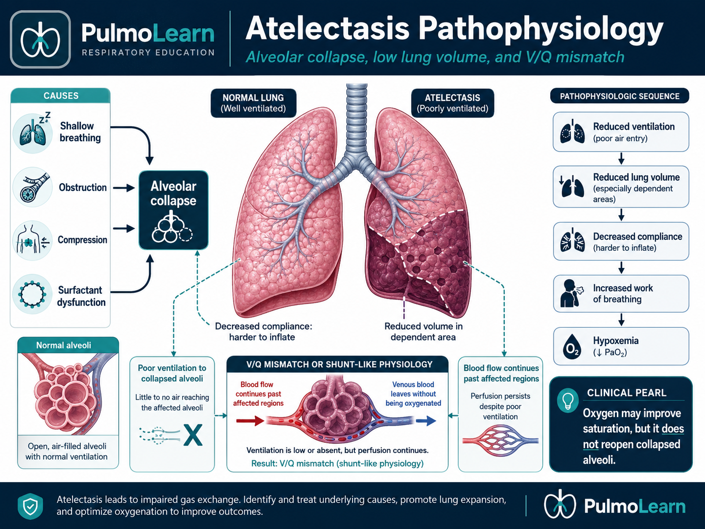
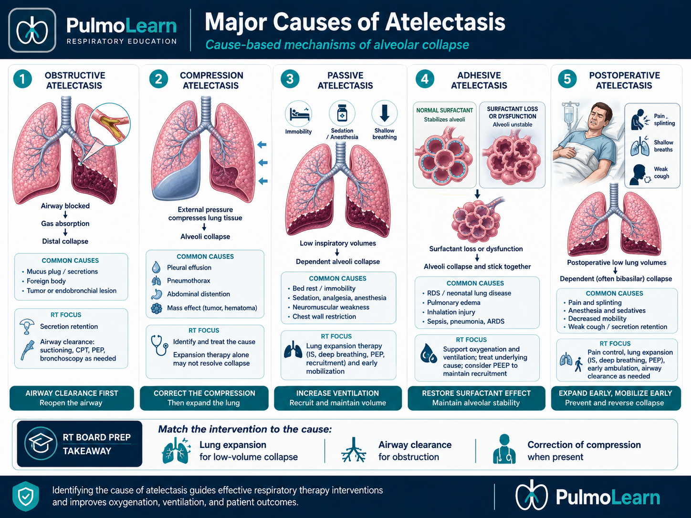
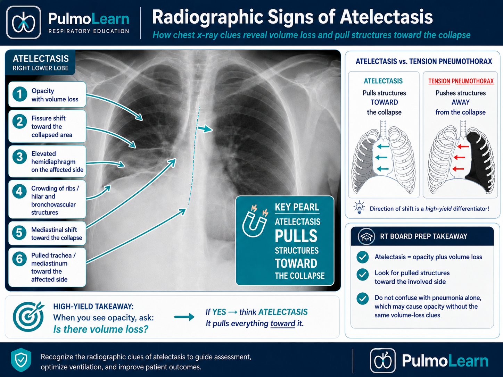

Atelectasis is partial or complete collapse of alveoli or lung segments, causing reduced ventilation, decreased lung volume, impaired gas exchange, and increased work of breathing. This module focuses on RT-level recognition, prevention, diagnostics, lung expansion therapy, secretion management, and escalation when collapse contributes to hypoxemia or respiratory failure.
Category Restrictive / Volume-Loss Process
Estimated Time 30–40 minutes
Level Core RT Knowledge 2027 NBRC Disease Alignment: I.A.4, I.A.7–8; I.B.1.d–e, I.B.3–4; I.E.3–4; III.B.1–5; III.C.1–3, 6; III.E.2.a, i–o; Depth: Adults F. Pre-/Post-Operative Care.
Recognize volume-loss patterns, determine whether collapse is low-volume, obstructive, or compressive, select cause-specific therapy, reassess recruitment, and escalate persistent hypoxemia or lobar collapse.
Learning Objectives
By the end of this atelectasis module, learners should be able to connect alveolar collapse, causes of low lung volume, clinical findings, imaging patterns, oxygenation changes, lung expansion therapy, and RT escalation priorities.
1. Explain pathophysiology Describe how alveolar collapse decreases ventilation, lung volume, compliance, and V/Q matching.
3. Interpret assessment data Use breath sounds, SpO₂, ABGs, chest x-ray, lung volume signs, and response to therapy to determine severity.
4. Choose RT interventions Select lung expansion therapy, secretion clearance, positioning, oxygen support, and escalation based on the likely cause.
Video Overview
2-Minute Atelectasis Overview
Watch this quick overview before moving into the disease snapshot.
Disease Snapshot
Atelectasis means alveoli are not fully open. Collapsed or underinflated alveoli receive little or no ventilation, while perfusion may continue. This creates V/Q mismatch or shunt-like physiology and can cause hypoxemia, especially after surgery, prolonged bedrest, mucus plugging, shallow breathing, or airway obstruction.
What it is: Collapse or incomplete expansion of alveoli, segments, lobes, or an entire lung.
Primary problem: Reduced ventilation to affected lung units.
Classic clues: Low lung volumes, diminished breath sounds, hypoxemia, fine crackles during reopening, and radiographic volume-loss signs.
Key diagnostic clue: Chest x-ray showing opacity plus volume loss, elevated diaphragm, fissure shift, or mediastinal shift toward collapse.
Acute danger: Large mucus plug, lobar collapse, severe hypoxemia, rising WOB, or failure to improve.
RT priority: Improve alveolar recruitment and ventilation while treating the cause of collapse.
RT Clinical Connection
For RTs, atelectasis is a volume and ventilation problem. The RT must decide whether the patient needs deep breathing, incentive spirometry, positive pressure lung expansion, airway clearance, bronchodilator support, oxygen, or urgent escalation for obstruction.
Board Prep Frame
Immediately associate atelectasis with low lung volume, decreased compliance, diminished breath sounds, postoperative shallow breathing, mucus plugs, hypoxemia from V/Q mismatch, and improvement with lung expansion or secretion clearance when appropriately selected.
Quick Pre-Check
Start with the core atelectasis pattern
Which statement best describes the core problem in atelectasis?
Anatomy & Pathophysiology
Atelectasis occurs when alveoli lose volume or fail to open. This reduces ventilated surface area, lowers compliance, increases work of breathing, and can create hypoxemia because blood may still flow past poorly ventilated alveoli.

Shallow breathing, obstruction, compression, or surfactant loss → alveolar collapse → reduced lung volume and compliance → V/Q mismatch or shunt-like physiology → hypoxemia and increased work of breathing.
What Changes During Atelectasis
Atelectasis Change
What Happens
Why It Matters
Alveolar collapse
Alveoli lose volume or close.
Less surface area is available for ventilation and gas exchange.
Reduced compliance
Collapsed lung units are harder to inflate.
Work of breathing increases and tidal volumes may fall.
V/Q mismatch
Perfusion continues through poorly ventilated areas.
Hypoxemia may occur and may not fully correct if shunt is significant.
Volume loss
Fissures, diaphragm, or mediastinum may shift toward the collapse.
These are high-yield x-ray clues.
Secretion retention
Mucus may block airways or worsen collapse.
Airway clearance may be required, not just oxygen.
Oxygenation Concept
Oxygen may improve SpO₂, but oxygen alone does not reopen collapsed alveoli or remove a mucus plug. If the cause is poor expansion, the patient needs recruitment strategies such as deep breathing, incentive spirometry, CPAP/PEP, positioning, ambulation, or positive pressure therapy when indicated.
Danger Sign
Sudden unilateral breath sound loss with acute hypoxemia after surgery or prolonged ventilation should raise concern for mucus plug with lobar or whole-lung collapse.
Click the Atelectasis Hotspots
Click each hotspot to reveal how that structure contributes to atelectasis.
Start here: Click all four hotspots to complete this activity.
0 / 4 hotspots reviewed
Etiology, Causes & Risk Factors
Atelectasis can occur when airways are blocked, the lung is compressed, surfactant is inadequate, or the patient does not take deep breaths. Postoperative atelectasis is common because pain, sedation, immobility, and shallow breathing reduce alveolar expansion.

Type or Cause
Why It Matters
RT Focus
Obstructive
Mucus plug, foreign body, or tumor blocks airflow distal to obstruction.
Airway clearance, suctioning, bronchoscopy escalation if severe.
Compression
Pleural effusion, pneumothorax, mass, or abdominal distention compresses lung tissue.
Support oxygenation and notify team; expansion alone may not fix external pressure.
Passive
Low lung volumes from shallow breathing, immobility, pain, or sedation.
Incentive spirometry, deep breathing, ambulation, positioning.
Adhesive
Surfactant deficiency or dysfunction promotes alveolar collapse.
Recognize high-risk patients and support recruitment as ordered.
Postoperative
Pain and anesthesia reduce cough, sigh breaths, and lung expansion.
Teach splinting, IS, cough, deep breathing, early mobility.
Sort the Atelectasis Factors
Choose the best category for each item, then check your answers.
Mucus plug after abdominal surgery
Shallow breathing from incisional pain
Large pleural effusion
Foreign body blocking a bronchus
Immobility with poor deep breathing
Complete the sorting activity to continue.
Clinical Manifestations
Atelectasis may be subtle or severe depending on the amount of lung involved. RT assessment should focus on breath sounds, oxygenation, work of breathing, cough effectiveness, secretion burden, fever, and risk factors such as recent surgery or immobility.
Finding Type
What the RT May See
Symptoms
Dyspnea, cough, chest discomfort, difficulty taking a deep breath, or mild symptoms if small area involved.
Diminished or absent over affected area; fine crackles may occur as alveoli reopen.
Oxygenation clues
Low SpO₂ or PaO₂ from V/Q mismatch or shunt-like physiology.
Ventilation clues
Usually normal PaCO₂ early; rising PaCO₂ suggests fatigue, severe disease, or ventilatory failure.
Postoperative clues
Shallow breathing, splinting, poor cough, reduced mobility, and declining inspiratory-volume trends. Fever should prompt evaluation for another cause rather than being attributed to atelectasis alone.
Important Teaching Point
Do not treat every opacity as pneumonia. Atelectasis often has volume-loss signs. Pneumonia is infection and consolidation; atelectasis is collapse or underinflation.
Diagnostics & Assessment
Diagnostic data helps confirm volume loss, determine extent of collapse, identify obstruction or compression, and evaluate oxygenation impact.
Chest X-ray and Imaging

Finding
Atelectasis Pattern
Opacity
Collapsed region may appear denser or whiter.
Volume loss
Key distinguishing clue; affected area shrinks.
Fissure shift
Fissures may move toward the collapsed segment or lobe.
Elevated hemidiaphragm
Can occur on the side of lower-volume lung.
Mediastinal shift
Often shifts toward significant collapse; away from tension processes.
ABG and Oxygenation Patterns
Pattern
Meaning
Low PaO₂ or low SpO₂
Hypoxemia from V/Q mismatch or shunt-like physiology.
Normal PaCO₂ early
Ventilation may be preserved if collapse is limited.
Rising PaCO₂
Concerning for fatigue, extensive disease, or inadequate ventilation.
Poor oxygen response
May suggest shunt physiology or significant collapse requiring recruitment/cause correction.
Bedside Assessment
Compare breath sounds bilaterally, assess cough strength and secretion clearance, review recent surgery/anesthesia/pain control, measure IS volume trends, evaluate mobility, and reassess after lung expansion therapy.
Severity Patterns & High-Yield Differentiation
Severity depends on how much lung is collapsed, whether hypoxemia is present, whether the cause is reversible, and whether the patient can cough, expand lung volume, and maintain ventilation.
Pattern
Typical Clue
RT Meaning
Small subsegmental atelectasis
Mild hypoxemia or minimal symptoms.
Encourage expansion, mobility, cough, and reassessment.
Lobar atelectasis
Marked diminished sounds and x-ray volume loss.
Consider obstruction, secretion clearance, positive pressure, and escalation.
Compression atelectasis
Effusion, pneumothorax, or external pressure.
External cause must be treated; expansion therapy alone may fail.
Severe Lobar/whole-lung collapse, acute distress, sudden unilateral breath sound loss, or rising CO₂.
Pattern Recognition Activity
A postoperative patient has shallow breathing, SpO₂ 89% on room air, diminished bases, and chest x-ray showing bibasilar opacities with low lung volumes. What is the most likely RT priority?
Severity & Red Flags
The key question is not simply “Is there atelectasis?” The key question is whether collapse is causing hypoxemia, poor ventilation, or a sign of a serious airway obstruction or compression process.
Red Flag
Why It Matters
Sudden unilateral diminished or absent breath sounds
May indicate mucus plug, mainstem obstruction, pneumothorax, or major collapse.
Severe or worsening hypoxemia
Suggests significant V/Q mismatch or shunt-like physiology.
Rising PaCO₂ with fatigue
Suggests worsening ventilation or respiratory muscle fatigue.
Whole-lung or lobar collapse
May require urgent physician notification, bronchoscopy, or advanced support.
Failure to improve after appropriate therapy
Cause may be obstruction, compression, or another diagnosis.
Hemodynamic instability or tracheal deviation
Think tension pneumothorax or major mediastinal shift, not simple atelectasis.
Management & Treatment
Atelectasis management depends on the cause. Oxygen supports hypoxemia, but the RT priority is to restore ventilation to collapsed regions when possible and prevent further collapse.
Evidence-Based Postoperative Care
Do not treat incentive spirometry as an automatic stand-alone order. First identify why the patient is underinflating the lungs: pain, sedation, immobility, weak cough, secretion retention, or an obstructed airway. For a cooperative low-volume patient, coached sustained inspirations may be useful when combined with upright positioning, optimal analgesia, directed cough, and early mobility. If the patient cannot generate an effective inspiration, has worsening hypoxemia, or has persistent collapse, choose a more effective positive-pressure or airway-clearance strategy and reassess.
Intervention Options
Intervention
Best Use
Why It Helps
Incentive spirometry
Selected cooperative patients who need coached sustained inspiration as part of a broader lung-expansion plan.
Provides visual feedback, but should not be used as a stand-alone routine intervention; pair it with deep breathing, directed cough, early mobility, positioning, and adequate analgesia.
Deep breathing/coughing
Shallow breathing or retained secretions.
Improves lung expansion and secretion mobilization.
Early mobility/ambulation
Postoperative or immobile patients.
Improves ventilation distribution and lung volumes.
PEP/CPAP/IPPB
Poor inspiratory effort or persistent low volumes when indicated.
Provides positive pressure to help recruit alveoli.
Suctioning/airway clearance
Secretion retention or mucus plugging risk.
Removes obstruction and improves distal ventilation.
Bronchoscopy escalation
Suspected large mucus plug or unresolved lobar collapse.
May directly remove obstructing material.
Cause → Intervention Logic
If the cause is shallow breathing, choose lung expansion and mobility. If the cause is mucus plugging, prioritize airway clearance and possible bronchoscopy escalation. If the cause is compression, the external pressure must be treated while oxygenation is supported.
Atelectasis RT Clinical Management Framework
Respiratory therapists manage atelectasis by identifying low-volume lung collapse,
improving alveolar expansion, supporting secretion clearance, reassessing recruitment,
and escalating if oxygenation or collapse fails to improve.
Board Prep Connection
NBRC-style atelectasis questions often test whether the RT recognizes low lung
volume states and chooses lung expansion therapy, mobilization, airway clearance,
and reassessment before escalating care.
Match the Cause to the Best RT Strategy
For each finding, choose the management strategy that most directly addresses the cause. More than one intervention may eventually be used, but select the best initial focus.
Postoperative shallow breathing with bibasilar volume loss, manageable pain, and no major secretion burden
Coarse secretions, weak cough, and sudden lobar volume loss suggesting a mucus plug
Reduced lung expansion caused by a large pleural effusion or pneumothorax
Persistent low inspiratory volumes despite coaching, but the patient remains stable and cooperative
Whole-lung or unresolved lobar collapse with worsening hypoxemia despite appropriate initial therapy
Match each presentation to the best initial strategy.
Escalation & Advanced Considerations
Most mild postoperative atelectasis improves with lung expansion, cough, mobility, and pain control. Escalation is needed when collapse is extensive, oxygenation worsens, obstruction is suspected, or the patient cannot maintain ventilation.
Escalate for: Suspected mucus plug, unresolved lobar collapse, worsening oxygen need, or poor cough clearance.
Support concept: Positive pressure may recruit alveoli, but obstruction or compression must be corrected.
Board Pearl
Atelectasis shifts structures toward volume loss. Tension pneumothorax pushes structures away. On board-style questions, this direction of shift helps separate collapse from pressure buildup.
Respiratory Therapist Role
The RT is central to atelectasis prevention, early recognition, treatment delivery, monitoring, patient coaching, and escalation. The RT should assess risk, teach lung expansion, evaluate cough and secretions, and document response.
RT Task
What to Assess or Do
Why It Matters
Assess ventilation
RR, pattern, tidal depth, PaCO₂ trend, fatigue.
Detects worsening ventilation or poor expansion.
Assess oxygenation
SpO₂, PaO₂, oxygen need, response to recruitment.
Identifies severity and treatment response.
Evaluate breath sounds
Diminished areas, crackles, unilateral changes.
Helps localize collapse or obstruction.
Coach lung expansion
IS, deep breathing, splinting, positioning, mobility.
This guided case reveals one clinical stage at a time. Learners make an RT decision, receive feedback, and then continue to the next stage.
Stage 1: Initial Presentation
A 62-year-old patient is 18 hours post abdominal surgery. They are splinting their incision, taking shallow breaths, and have new oxygen need.
RR 24/min
SpO₂ 89% on room air
Breath Sounds Diminished bases
Decision Question: What is the priority first RT action?
Stage 2: Imaging Result
Chest x-ray shows bibasilar opacities with low lung volumes. The patient’s cough is weak because of pain.
Decision Question: Which finding supports atelectasis more than simple pneumonia?
Stage 3: Treatment Coaching
The patient performs a quick, shallow breath on the incentive spirometer and immediately exhales. The volume is far below predicted.
Decision Question: What should the RT coach?
Stage 4: Worsening Scenario
Later, the patient has sudden marked decrease in right-sided breath sounds, increased distress, and SpO₂ drops despite oxygen.
Decision Question: What is the best interpretation?
Case Wrap-Up
RT Takeaway: Atelectasis is treated by matching the intervention to the cause: lung expansion for low-volume collapse, airway clearance for mucus obstruction, and escalation for compression or unresolved lobar collapse.
If the patient worsens: sudden unilateral breath sound loss, severe hypoxemia, rising PaCO₂, or failure to respond means reassess immediately and escalate.
Knowledge Check
Board-Style Practice
Answer each question to complete this activity. Answer choices shuffle each time the lesson opens.
Question 1
A postoperative patient has shallow breathing, diminished bases, low IS volumes, and mild hypoxemia. Which intervention is most directly targeted to the likely cause?
Question 2
Which chest x-ray finding most strongly supports atelectasis?
Question 3
A ventilated patient suddenly develops absent breath sounds on the right with severe hypoxemia. A mucus plug is suspected. What is the best RT priority?
Question 4
Why can atelectasis cause hypoxemia?
0 / 4 questions answered
FAQ
Common Atelectasis Questions
What is the simplest way to understand atelectasis?
Atelectasis means alveoli or lung segments are collapsed or underinflated, so they are not ventilating effectively.
How is atelectasis different from pneumonia?
Atelectasis is collapse and volume loss. Pneumonia is infection and inflammatory consolidation. Both can look like opacities, but atelectasis often shows volume-loss signs.
Why does surgery increase atelectasis risk?
Pain, sedation, anesthesia, immobility, and weak cough reduce deep breaths and secretion clearance, allowing alveoli to collapse.
Does oxygen fix atelectasis?
Oxygen can improve hypoxemia, but it does not reopen alveoli or remove obstruction. Lung expansion and cause correction are still needed.
When is bronchoscopy considered?
Bronchoscopy may be considered when a mucus plug or obstructing material is suspected and collapse or hypoxemia does not resolve with less invasive airway clearance.
What is the key x-ray clue?
Volume loss is the key clue. Look for elevated diaphragm, fissure shift, crowding, and mediastinal shift toward the collapsed side.
What should RTs teach after surgery?
Teach splinting, slow sustained incentive spirometry, deep breathing, effective cough, upright positioning, and early mobility when safe.
Summary & Clinical Pearls
Atelectasis is collapse or underinflation of alveoli that reduces ventilation, decreases lung volume, lowers compliance, and causes hypoxemia through V/Q mismatch or shunt-like physiology. Treatment depends on the cause: recruit alveoli, clear secretions, correct compression, and escalate when collapse is severe or persistent.
Must know: Atelectasis is a volume-loss and ventilation problem.
Board pearl: Structures shift toward atelectasis because lung volume is lost.

![Stylized atelectasis lung diagram showing both lungs, trachea, and central bronchi in a clean respiratory-education illustration style. The image highlights a mucus plug obstructing a central bronchus, a region of collapsed alveoli in the lower left lung, a second underinflated or low-volume region in the lower right lung representing reduced compliance, and a subtle lower right ventilation-perfusion mismatch area showing continued perfusion to poorly ventilated lung. The diagram is designed for four interactive hotspots that teach collapsed alveoli, mucus plugging, reduced compliance, and V/Q mismatch.](atelectasis-hotspot-airway-map.png)